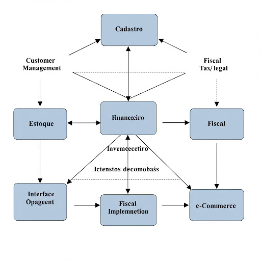
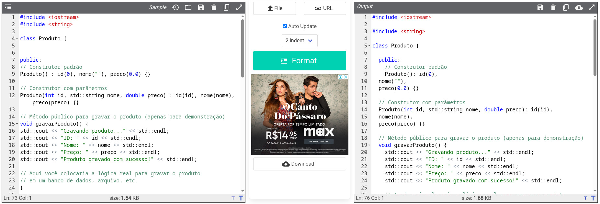

Aula 5 APROFUNDANDO A MANUTENIBILIDADE E AS TÉCNICAS DE DESENVOLVIMENTO
5.1 Manutenibilidade
Manutenibilidade é um atributo de qualidade do software que representa a facilidade com a qual um produto de software pode ser modificado para corrigir defeitos, adaptar-se a mudanças no ambiente, ou ser aprimorado com novas funcionalidades. Em essência, é um indicador qualitativo da facilidade em corrigir, adaptar ou melhorar o software. Um software “manutenível” é aquele que pode ser facilmente compreendido, modificado e testado. O esforço necessário para localizar e corrigir um erro em um programa é uma forma limitada de definir manutenibilidade. Uma visão mais abrangente considera o esforço necessário para modificar um programa em operação, para adaptar-se a mudanças e para adicionar novas funcionalidades.
5.1.1 Atributos da Manutenibilidade:
A manutenibilidade é crucial por diversas razões. Vejamos abaixo.
5.1.1.1 Redução de custos a longo prazo:
Investir em manutenibilidade durante o desenvolvimento pode reduzir significativamente os custos de manutenção ao longo da vida útil do sistema. O esforço para adicionar novas funcionalidades após o lançamento é caro, pois exige tempo para entender o sistema e analisar o impacto das alterações.
5.1.1.2 Adaptação a mudanças:

O software precisa evoluir para acompanhar as mudanças nos requisitos do usuário, no ambiente operacional e nas necessidades do negócio. Um sistema manutenível facilita essa adaptação.
5.1.1.3 Correção eficiente de defeitos:
Identificar e corrigir erros em um software bem estruturado e compreensível é mais rápido e menos propenso a introduzir novos problemas.
5.1.1.4 Aumento da vida útil do software:
Sistemas com alta manutenibilidade podem ser mantidos e evoluídos por um período mais longo, maximizando o retorno sobre o investimento.
5.2 Técnicas de Desenvolvimento para a Manutenibilidade
Vários fatores influenciam a manutenibilidade de um sistema de software:
5.2.0.1 Desenvolvimento Orientado a Objetos (OO):
A OO, com seus conceitos de classes, objetos, encapsulamento, herança e polimorfismo, pode levar a sistemas mais modulares e fáceis de manter. A distribuição homogênea da inteligência do sistema pelas classes aumenta a coesão e reduz o acoplamento.
5.2.0.2 Projeto modular:

Um software com modularidade eficaz (Capítulo 12 - pressman) permite que o desenvolvimento seja planejado mais facilmente, incrementos de software sejam definidos e entregues, mudanças sejam acomodadas com mais facilidade, testes e depuração sejam mais eficazes e a manutenção a longo prazo possa ser realizada sem efeitos colaterais graves. A modularização deve ser feita com cuidado, evitando modularizar demais ou de menos.
5.2.0.3 Coesão e Acoplamento:
Alta coesão dentro dos módulos e baixo acoplamento entre eles tornam o sistema mais fácil de entender e modificar. Se a inteligência do sistema for distribuída de forma mais homogênea pelas classes de uma aplicação, cada objeto conhecerá e fará apenas algumas poucas coisas (que em geral são bem focadas), e a coesão do sistema aumentará. Isso aumenta a facilidade de manutenção do software e reduz o impacto dos efeitos colaterais devido a mudanças.
5.2.0.3.1 COESÃO
Robert C. Martin no inicio dos anos 2000 e diz que uma classe deve ter apenas uma única responsabilidade e realizá-la de maneira satisfatória, ou seja, uma classe não deve assumir responsabilidades que não são suas .
Classe não-coesa: a classe “Programa” assume responsabilidades lógicas que não deveriam ser suas. “ObterProduto” deveria ser método de uma classe “Produto”. Ao invés disso “ObterProduto” é um método de uma classe “Progama”.
// arquivo programa.h
#include <iostream>
#include <string>
public class Programa
{
public void ExibirFormulario() {
//implementação
}
public void ObterProduto() {
//implementação
}
public void gravarProdutoDB {
//implementação
}
}Classe coesa: Na classe “Programa”, o botão de interface chama um método de uma classe “Produto” chamado “gravarProduto()”.
// arquivo produto.h
#include <iostream>
#include <string>
class Produto {
public:
// Construtor padrão
Produto() : id(0), nome(""), preco(0.0) {}
// Construtor com parâmetros
Produto(int id, std::string nome, double preco) : id(id), nome(nome), preco(preco) {}
// Método público para gravar o produto (apenas para demonstração)
void gravarProduto() {
std::cout << "Gravando produto..." << std::endl;
std::cout << "ID: " << id << std::endl;
std::cout << "Nome: " << nome << std::endl;
std::cout << "Preço: " << preco << std::endl;
std::cout << "Produto gravado com sucesso!" << std::endl;
// Aqui você colocaria a lógica real para gravar o produto
// em um banco de dados, arquivo, etc.
}
// Métodos getters (opcional, mas boa prática)
int getId() const {
return id;
}
std::string getNome() const {
return nome;
}
double getPreco() const {
return preco;
}
// Métodos setters (opcional, para modificar os atributos)
void setId(int novoId) {
id = novoId;
}
void setNome(const std::string& novoNome) {
nome = novoNome;
}
void setPreco(double novoPreco) {
preco = novoPreco;
}
private:
int id;
std::string nome;
double preco;
};5.2.0.4 Encapsulamento de informações:
O encapsulamento ajuda a proteger os dados e a reduzir as dependências entre diferentes partes do sistema, facilitando a manutenção e a prevenção de efeitos colaterais inesperados.
Considere a classe CartaoCredito
#include "stdafx.h"
#include <iostream>
#include <string>
using namespace std;
class CartaoCredito
{
// Esta declaração esta errada
// Deste modo é possive capturar o numero do cartão
// A classe expos o numero para que seja acessivel de outra classe
// para não expor os numero use private
// private:
public:
string numeroCartao; // <======================= olha isso
double gastos;
//public:
void cobranca(string nCartao, double valor)
{
numeroCartao = nCartao;
gastos = gastos + valor;
}
// construtor
CartaoCredito()
{
}
};Considere a implementação abaixo
#include "stdafx.h"
#include <iostream>
#include <string>
#include "cartaocredito.h"
using namespace std;
void metodoMalicioso(CartaoCredito& cartao)
{
cartao.gastos = 0;
cout << "Seu numero de cartão: " << cartao.numeroCartao;
}
int _tmain(int argc, _TCHAR* argv[])
{
// Uma transação hipotetica
CartaoCredito transacao;
transacao.cobranca("3453 3636 0001 1267", 350.00);
// Metodo malicioso Injeta um gasto valor de 0 e imprime o numero do cartão
metodoMalicioso(transacao);
cout << endl;
system("pause");
return 0;
}Devido ao erro de encapsulamento do atributo numeroCartao da classe CartaoCredito, o método independente metodoMalicioso tem acesso aos atributos instríssecos da classe.
5.2.0.5 Padrões de projeto:
Aplicar padrões de projeto ajuda a criar soluções bem estabelecidas e compreensíveis para problemas de design comuns. Isso facilita a comunicação entre os desenvolvedores e torna o código mais previsível e manutenível.
Documentação do site refactoring.guru
Criacionais
| Nome do Padrão | Descrição |
|---|---|
| Abstract Factory | Fornece uma interface para criar famílias de objetos relacionados ou dependentes sem especificar suas 1 classes concretas. Permite criar diferentes “produtos” seguindo uma interface comum, de forma que o código cliente não dependa das implementações específicas desses produtos. |
| Builder | Separa a construção de um objeto complexo de sua representação, de modo que o mesmo processo de construção pode criar diferentes representações. 2 Útil quando a criação de um objeto envolve muitos passos ou configurações opcionais, oferecendo uma forma mais flexível e legível de construir objetos complexos em comparação com construtores sobrecarregados. |
| Factory Method | Define uma interface para criar um objeto, mas permite que as subclasses alterem o tipo de objetos que serão criados. 3 Delega a lógica de instanciação para subclasses, tornando o código mais flexível para extensões futuras, pois novas classes de produtos podem ser introduzidas sem modificar o código cliente existente. |
| Prototype | Especifica os tipos de objetos a serem criados usando uma instância prototípica e cria novos objetos copiando este protótipo. 4 Permite criar novos objetos evitando o conhecimento detalhado das classes concretas e pode ser mais eficiente em alguns casos do que usar construtores padrão, especialmente quando a criação de instâncias é um processo custoso. |
| Singleton | Garante que uma classe tenha apenas uma instância e fornece um ponto de acesso global para ela. Útil para gerenciar recursos compartilhados, configurações globais ou serviços únicos dentro de um sistema. É importante implementar o padrão Singleton com cuidado para evitar problemas de concorrência e testabilidade. |
Estruturais
| Nome do Padrão | Descrição |
|---|---|
| Adapter | Permite que classes com interfaces incompatíveis trabalhem juntas. Atua como um invólucro (wrapper) que converte a interface de uma classe em outra interface esperada pelos clientes. Facilita a reutilização de classes existentes que não atendem diretamente às necessidades da aplicação. |
| Bridge | Desacopla uma abstração de sua implementação, de modo que as duas podem evoluir independentemente. Em vez de ter uma hierarquia de classes única que combina abstração e implementação, o padrão Bridge introduz duas hierarquias separadas: uma para a abstração e outra para a implementação, permitindo maior flexibilidade e evitando a proliferação de classes. |
| Composite | Compõe objetos em estruturas de árvore para representar hierarquias do tipo “todo-parte”. Permite que os clientes tratem objetos individuais e composições 1 de objetos de maneira uniforme. Facilita a criação de estruturas complexas e a aplicação de operações de forma recursiva sobre essas estruturas. |
| Decorator | Adiciona responsabilidades a um objeto dinamicamente. Fornece uma alternativa flexível ao uso de subclasses para estender a funcionalidade. Envolve um objeto existente com um novo objeto “decorador” que adiciona comportamento adicional, mantendo a mesma interface do objeto original. |
| Facade | Fornece uma interface unificada para um conjunto de interfaces em um subsistema. Define uma interface de nível superior que torna o subsistema mais fácil de usar. Simplifica a interação com um sistema complexo, expondo apenas um ponto de entrada de alto nível. |
| Flyweight | Utiliza o compartilhamento para suportar eficientemente um grande número de objetos de granularidade fina. Separa o estado intrínseco (compartilhado) do estado extrínseco (não compartilhado) de um objeto. O estado intrínseco é armazenado nos objetos Flyweight e compartilhado, enquanto o estado extrínseco é passado para os métodos do Flyweight quando necessário. Isso pode reduzir significativamente o consumo de memória quando muitos objetos semelhantes precisam ser criados. |
| Proxy | Fornece um marcador (placeholder) para outro objeto a fim de controlar o acesso a ele. Um Proxy atua como um intermediário, controlando quando e como o objeto real é acessado. Pode ser usado para diversas finalidades, como lazy initialization, controle de acesso, logging, etc. |
Comportamentais
| Nome do Padrão | Descrição |
|---|---|
| Chain of Responsibility | Um padrão comportamental |
| Command | Um padrão comportamental que permite enviar solicitações sem saber quem as recebe ou o que está sendo solicitado |
| Interpreter | Um padrão comportamental |
| Iterator | Um padrão comportamental |
| Mediator | Um padrão que promove o baixo acoplamento entre classes |
| Memento | Um padrão que permite salvar e restaurar o estado de um objeto |
| Observer | Um padrão que permite que um mesmo objeto tenha várias representações |
| Strategy | Um padrão que permite definir uma família de algoritmos e torná-los intercambiáveis |
| Template Method | Um padrão comportamental |
| Visitor | Um padrão comportamental |
5.2.0.6 Padrões e convenções de codificação:
A adoção de padrões e convenções de codificação bem definidos leva a um código-fonte autodocumentado e inteligível, facilitando a leitura e a compreensão.

5.2.0.7 Documentação:
Embora métodos ágeis busquem minimizar a documentação formal, é importante criar documentos que serão consultados mais adiante no processo de desenvolvimento. Descrições precisas contribuem para a redução dos custos de manutenção.
5.2.0.8 Qualidade do código:
A produção de códigos de alta qualidade e legíveis é fundamental para a implementação de software manutenível.
5.2.0.9 Desenvolvimento Guiado por Testes (TDD):
O TDD envolve a escrita de testes antes da implementação do código. Isso leva a um código mais testável e, consequentemente, mais manutenível, pois a testabilidade é um fator de qualidade importante.

A realização de testes (unitários, de integração, de ponta a ponta) garante que as modificações não introduzam novos defeitos e que o sistema continue funcionando corretamente. Testes de regressão são importantes para garantir que alterações não produzam efeitos colaterais involuntários.
5.2.0.10 Refatoração:
A refatoração aprimora a estrutura interna de um projeto (ou código-fonte) sem alterar sua funcionalidade ou comportamento externos. Ela mantém o código simples e manutenível e evita a degradação do código que aumenta os custos e as dificuldades de manutenção.
5.2.0.11 Gerenciamento de configuração:
O gerenciamento de configuração gerencia as alterações de forma apropriada, controla as versões do software e dos artefatos do projeto, e mantém a integridade do sistema ao longo do tempo. A matriz de rastreabilidade documenta as dependências entre requisitos, decisões de arquitetura e causas de defeito, auxiliando na determinação do impacto de uma alteração proposta.
Más práticas de desenvolvimento, como falta de estabilidade da equipe e incentivos inadequados para escrever software manutenível durante o desenvolvimento, podem impactar negativamente a manutenibilidade.
5.2.0.12 Integração Contínua e Entrega Contínua (CI/CD):
A CI/CD facilita a detecção precoce de problemas e garante que as alterações sejam integradas e testadas frequentemente, reduzindo o risco de grandes problemas durante a manutenção e evolução. Testes de regressão automatizados são uma parte crucial desse processo.
5.3 Exercícios
5.3.1 Testes de multipla escolha
| Teste 01 |
|---|
| Quando um sistema de software existente requer modificações para continuar operando corretamente devido a alterações no ambiente tecnológico, como a atualização do sistema operacional ou do banco de dados em que ele roda, qual tipo de manutenção de software está sendo realizado? |
| A) Manutenção Perfectiva (Implementação de novos requisitos). |
| B) Manutenção Corretiva (Correção de Erros). |
| C) Manutenção Adaptativa (Modificação para novo ambiente). |
| D) Reengenharia de Software. |
| E) Teste de Validação. |
| Teste 02 |
|---|
| Um dos objetivos da engenharia de software é incrementar a facilidade com que as alterações podem ser acomodadas e reduzir o esforço necessário para fazê-las, contribuindo diretamente para a manutenibilidade. Qual prática de desenvolvimento, mencionada nas fontes, foca em melhorar a estrutura interna de um sistema de software sem alterar seu comportamento observável, tornando-o potencialmente mais fácil de entender e mudar? |
| A) Teste Caixa-Preta. |
| B) Gerenciamento de Configuração. |
| C) Refatoração. |
| D) Teste de Aceitação. |
| E) Análise de Valor Limite. |
| Teste 03 |
|---|
| Adicionar novas funcionalidades, aprimorar a usabilidade ou melhorar o desempenho de um sistema de software existente são atividades que visam estender seu valor de negócio e, consequentemente, seu tempo de uso portanto a VIDA ÚTIL. De acordo com Sommerville 9ed, que tipo de manutenção engloba a implementação de requisitos novos ou alterados? |
| A) Manutenção Perfectiva. |
| B) Manutenção Corretiva. |
| C) Manutenção Adaptativa. |
| D) Teste de Sistema. |
| E) Reestruturação de Programa. |
| Teste 04 |
|---|
| As revisões técnicas e inspeções são atividades de controle de qualidade (do projeto) que verificam a qualidade dos entregáveis e podem revelar e corrigir erros antes dos testes. Qual é um dos principais objetivos dessas atividades ? |
| A) Descobrir erros e omissões nos artefatos de software antes do início dos testes. |
| B) Apenas documentar o processo de desenvolvimento. |
| C) Gerar automaticamente código-fonte executável. |
| D) Medir a complexidade ciclomática do código. |
| E) Garantir que o software está 100% livre de defeitos. |
| Teste 05 |
|---|
| O reúso de software (código, especialmente o código orientado a objetos) é uma estratégia que pode trazer diversas vantagens desejáveis para manutenibilidade. Qual das seguintes vantagens do reúso de software é diretamente relacionada à redução de custos e a um desenvolvimento de software mais rápido? |
| A) Aumento da complexidade do sistema. |
| B) Aumento da necessidade de suporte externo. |
| C) Diminuição da confiança no sistema. |
| D) Redução de custos e desenvolvimento de software mais rápido. |
| E) Perda de controle sobre a funcionalidade do software. |
| Teste 06 |
|---|
| Extensão de Vida Útil é um dos benefícios do software que possui boa manutenibilidade. Contudo, ao avaliar um sistema de software legado para decidir se ele deve ser substituído, transformado (reengenharia) ou mantido, quais fatores importantes, segundo as fontes, devem ser avaliados para ajudar a tomar essa decisão estratégica que impacta a vida útil do software? |
| A) O valor de negócio que o sistema legado ainda oferece e a qualidade técnica do software. |
| B) Apenas o custo inicial de desenvolvimento e o ano de criação do sistema. |
| C) O número de usuários do sistema e a cor da interface. |
| D) A preferência da nova equipe de desenvolvimento pela linguagem utilizada no legado. |
| E) A quantidade de documentação, mesmo que desatualizada ou incompleta. |
| Teste 07 |
|---|
| Adaptação a Mudanças e Facilidade de Manutenção são benefícios do software que possui boa manutenibilidade. O gerenciamento de configuração de software (SCM) é uma atividade de apoio crucial para gerenciar as mudanças em um sistema de software ao longo do tempo. Qual das seguintes atividades é um componente essencial do gerenciamento de configuração de software, conforme descrito nas fontes, que facilita a gestão de diferentes estados do software e é vital durante a manutenção? |
| A) Teste Caixa-Branca. |
| B) Análise de Requisitos. |
| C) Controle de Versão. |
| D) Estimativa de Esforço. |
| E) Programação em Pares. |
| Teste 08 |
|---|
| Boa manutenibilidade resulta de um projeto de boa qualidade. Conforme Pressman 8ed, engenheiros de software bem-sucedidos compartilham hábitos e peculiaridades de trabalho. Qual das opções a seguir é listada como um desses hábitos que contribui diretamente para a qualidade do software e sua manutenibilidade? |
| A) Evitar testes formais sempre que possível. |
| B) Desejo de refabricar continuamente o projeto e o código e de desenvolver aplicações que possam ser mantidas. |
| C) Usar a linguagem de programação mais popular, independentemente da aplicação. |
| D) Focar apenas na velocidade de desenvolvimento inicial. |
| E) Ignorar a documentação, pois ela se torna desatualizada rapidamente. |
| Teste 09 |
|---|
| Existem técnicas para desenvolvimento da manutenibilidade no projeto. De acordo com Sommerville 9ed, qual é o objetivo principal da refatoração em software, visando diretamente a manutenibilidade? |
| A) Adicionar novas funcionalidades ao sistema sem alterar o código existente. |
| B) Melhorar a estrutura interna do software sem alterar seu comportamento observável, tornando-o mais fácil de entender e mudar. |
| C) Corrigir erros de lógica de programação ou defeitos funcionais. |
| D) Aumentar o desempenho e a eficiência da execução do software. |
| E) Converter código legado para uma nova linguagem de programação. |
| Teste 10 |
|---|
| Gerenciamento de Configuração: Qual atividade essencial do gerenciamento de configuração de software (SCM), conforme descrito por Pressman 8ed , é crucial para rastrear e controlar as diferentes versões de itens de configuração de software ao longo do ciclo de vida e durante a manutenção? |
| A) Teste de Aceitação pelo usuário final. |
| B) Análise de Viabilidade Técnica. |
| C) Controle de Versão. |
| D) Estimativa de Custos e Prazos. |
| E) Auditoria de Requisitos Funcionais. |